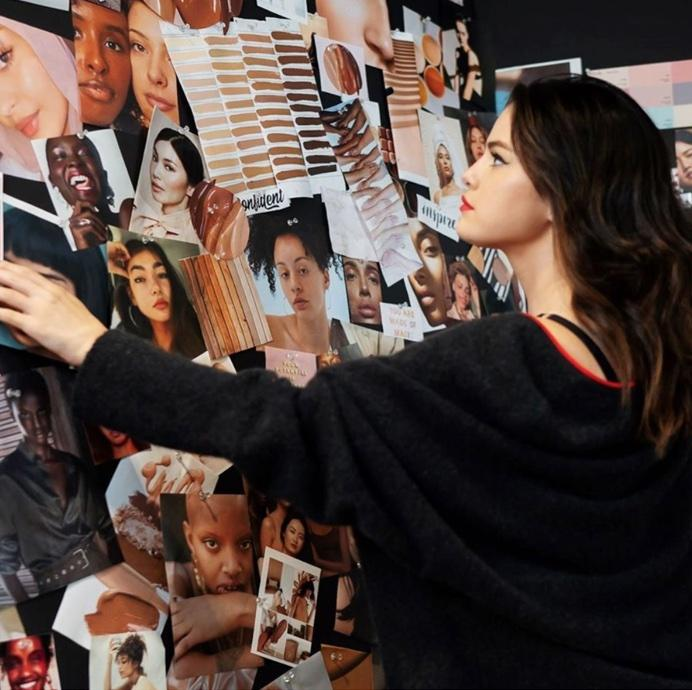
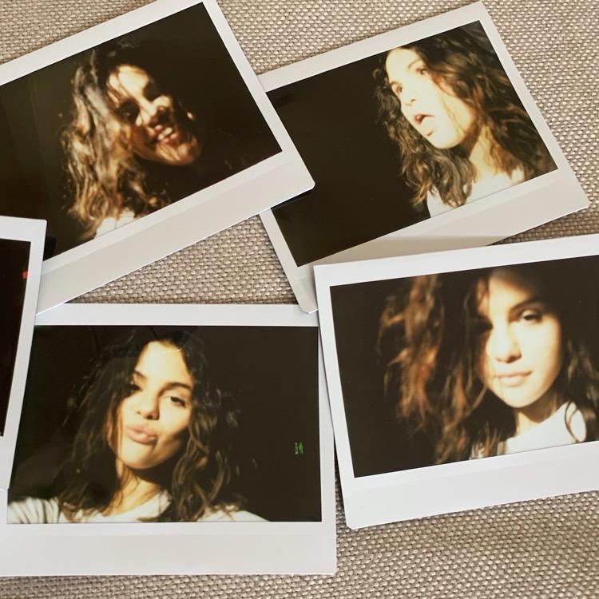
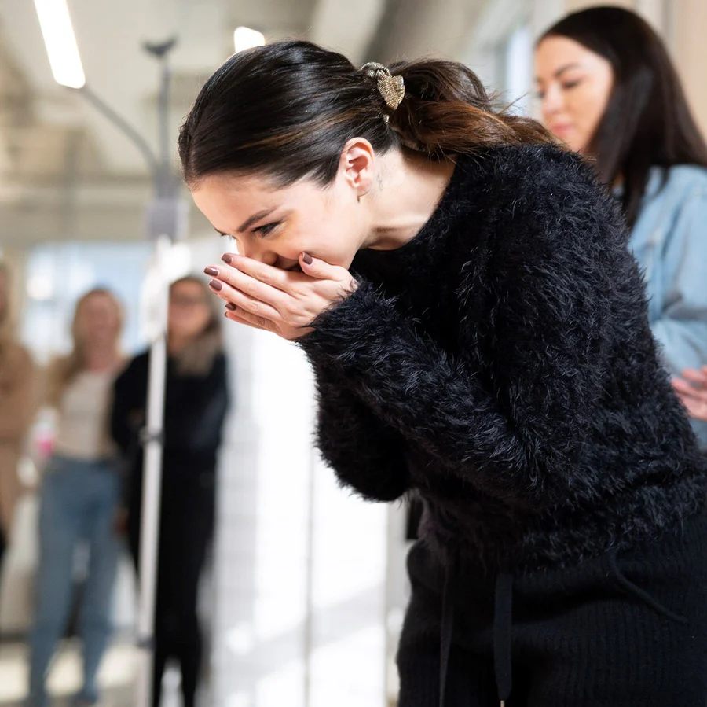
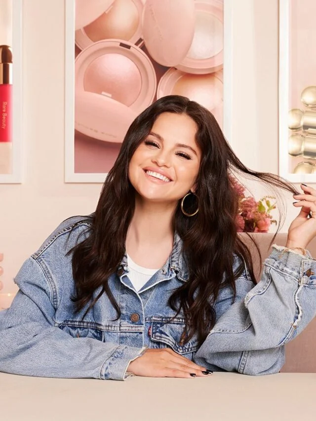

|
|
Rare Beauty |
Home Information Photos Video Reviews About us
Rare Beauty is breaking down unrealistic standards of perfection.
This is makeup made to feel good in, without hiding what makes you unique—because Rare Beauty is not about being someone else, but being who you are.

A Note From
Our Founder
I think Rare Beauty can be more than a beauty brand—it can make an impact. I want us all to stop comparing ourselves to each other and just start embracing our own uniqueness.

Founder Quote
“Being rare is about being comfortable with yourself. I've stopped trying to be perfect. I just want to be me.”
Selena Gomez, CA

 |
|
 |
|
Our Mission
We are on a mission to help everyone celebrate their individuality by redefining what beautiful means. We want to promote self-acceptance and give people the tools they need to feel less alone in the world.
Our vision is to create a safe, welcoming space in beauty—and beyond—that supports mental well-being across age, gender identity, sexual orientation, race, cultural background, physical or mental ability, and perspective.
We believe in the beauty of imperfections.
We nurture a caring, respectful community.
We create meaningful connections and relationships.
We champion authenticity and positivity.
We lead with transparency to build trust.
We believe there is power in being vulnerable.